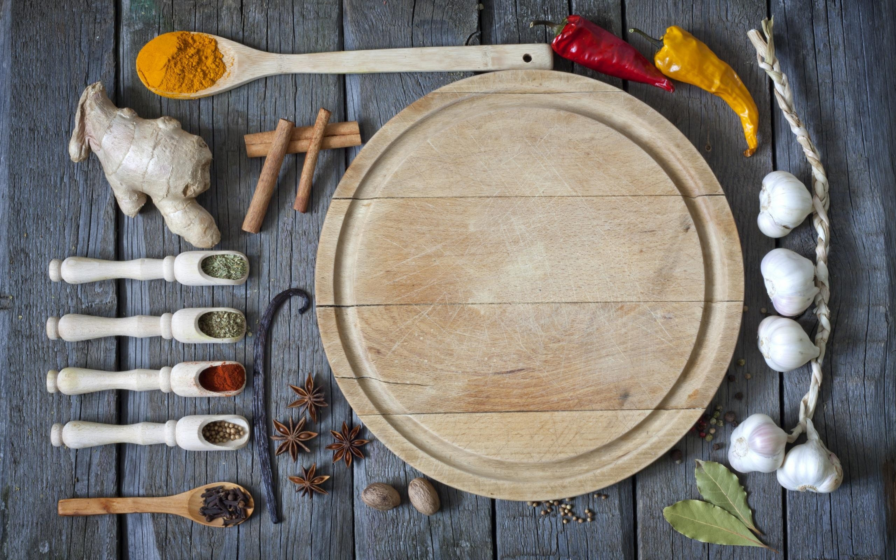

{% extends "layout.html" %}
{% block navbartype %} "white-navbar" {% endblock %}
{% block logo%} 

{% endblock %}
{% block recipesunderline %} class="active" {% endblock %}
{% block body %}
        <div id="recipes">
            <div class="container">
            </div>
        </div>
        <!--RECIPE SECTION START-->
        <section id="recipesection">
            <div class="container">
                <div class="row text-center header animate-in" data-anim-type="fade-in-up">
                    <div class="col-xs-12 col-sm-12 col-md-12 col-lg-12">
                        <h3>Recipes</h3>
                        <hr />
                    </div>
                </div>
                <div class="animate-in" data-anim-type="fade-in-up">
                    <div id="bgimg">
                <!-- <div class="row pad-bottom animate-in" data-anim-type="fade-in-up"> -->
                        <div id="recipe">
                            <!--  -->
                            <div id="menuList"><ul></ul></div>   
                            <script type="text/babel" src="../static/assets/js/scripts/recipes.js"></script>
                        </div>
                    </div>
                </div>
            </div>
        </section>
        <!-- RECIPE SECTION END -->
 {% endblock %}